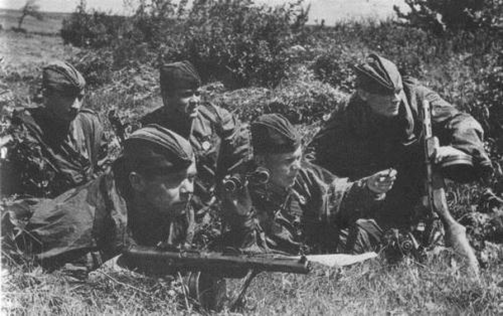

Missões de Reconhecimento (Recon) e de Vigilância
Missões de reconhecimento é uma ação conduzida de modo a colher subsídios de inteligência sobre o inimigo e a área de operações, podendo ser realizado por todos os meios, terrestres, aéreos e navais. É orientado para colher informes sobre as tropas e unidades inimigas, os acidentes capitais do terreno e suas características, os pontos sensíveis, localidades, rotas, áreas específicas ou zonas de atuação.
Buscam sempre os informes necessários a missão a qual devem subsidiar, porém repassam ao seu comando qualquer informação que for considerada relevante, o que deve ser feito em tempo real e na forma de fatos, isentando-se de opniões subjetivas.
A tropa em reconhecimento deve evitar engajar-se em combate, salvo se este engajamento for necessário ao cumprimento da missão ou a autodefesa.
Missões de vigilância é a contínua e sistemática observação do espaço de batalha, com foco nos pontos de maior ameaça como estradas, pontes, áreas de lançamento e aterragem, terreno restrito e outras áreas críticas. É o principal meio para detecção de atividade inimiga, e diretamente influenciada pelas condições de visibilidade, pelas características do terreno, pela defesa antiaérea e possibilidades do equipamento de vigilância.
Visa proteger as unidades contra a operações de inquietação, a surpresa e a observação por parte do inimigo, preservando o sigilo das operações, condição para a manutenção da iniciativa a liberdade de ação. Cabe aos operadores dos dispositivos de vigilância o alerta antecipado e preciso sobre a atividade inimiga, de forma que o comandante possa reagir pró-ativamente em favor da superioridade tático-estratégica-operacional, dependendo do seu dispositivo.
